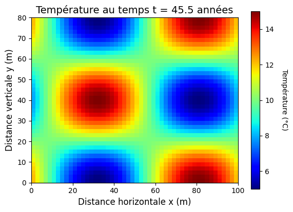

Tutoriel 7#
Affichage interactif de résultats 2D en temps réel#
Ce tutoriel explique comment produire des figures 2D de qualité pour afficher les résultats d’un modèle en temps réel : échelle de couleur fixe, coordonnées physiques, proportions correctes, labels avec unités et temps arrondi dans le titre.
1. Les éléments essentiels#
La figure doit être créée une seule fois, avant la boucle, avec sa colorbar. Ensuite, cinq réglages font toute la différence :
✓ 1. Échelle de couleur fixe#
Sans bornes fixes, l’échelle se réajuste à chaque itération : une même couleur ne représente plus la même valeur d’une image à l’autre, et l’animation devient impossible à interpréter. On fixe les bornes avec ax.imshow(..., vmin=5, vmax=15), ou après coup avec s.set_clim(5, 15).
⚠️ Piège classique : si vous appelez
ax.cla()dans la boucle, l’image est détruite et recréée à chaque affichage. Il faut donc repasservminetvmaxà chaqueimshow, faute de quoi la colorbar — elle, créée une seule fois avant la boucle — ne correspondra plus à ce qui est affiché.
✓ 2. extent pour les coordonnées physiques#
extent=[xmin, xmax, ymin, ymax] affiche les vraies coordonnées (m, km) au lieu des indices de la grille.
✓ 3. origin='lower'#
Place l’origine (0,0) en bas à gauche, comme dans un repère cartésien. Sans lui, le champ est affiché à l’envers.
✓ 4. ax.set_aspect('equal')#
Conserve les proportions du domaine, sans quoi un domaine de 100 × 80 m apparaît déformé.
✓ 5. Labels avec unités et temps arrondi#
Toujours indiquer les unités. Et sans arrondi, le titre affiche quinze décimales : écrivez f't = {temps:.1f} ans'.
2. Le code complet#
import numpy as np
import matplotlib.pyplot as plt
from IPython.display import clear_output, display
Lx, Ly = 100.0, 80.0 # dimensions du domaine, m
nx, ny = 50, 40 # nombre de points de grille
X, Y = np.meshgrid(np.linspace(0,Lx,nx), np.linspace(0,Ly,ny))
nt, freq_affich, dt = 100, 10, 0.5 # iterations, frequence d'affichage, pas de temps (ans)
# figure ET colorbar creees AVANT la boucle
fig, ax = plt.subplots(figsize=(6.5,4.5))
s = ax.imshow(0*X, extent=[0,Lx,0,Ly], origin='lower', cmap='jet', vmin=5, vmax=15)
cbar = plt.colorbar(s, ax=ax)
cbar.set_label("Température (°C)", rotation=270, labelpad=20)
temps = 0.0
for it in range(nt):
T = 10 + 5*np.sin(2*np.pi*X/Lx + 0.1*it)*np.cos(2*np.pi*Y/Ly) # le "modele"
temps += dt
if it % freq_affich == 0:
clear_output(wait=True)
ax.cla() # efface les axes, PAS la colorbar
ax.imshow(T, extent=[0,Lx,0,Ly], origin='lower', cmap='jet',
vmin=5, vmax=15) # vmin/vmax a repasser, voir le piege ci-dessus
ax.set_aspect('equal')
ax.set_xlabel('Distance horizontale x (m)', fontsize=12)
ax.set_ylabel('Distance verticale y (m)', fontsize=12)
ax.set_title(f'Température au temps t = {temps:.1f} années', fontsize=14)
display(fig) ; plt.pause(0.02)
plt.close()

3. Checklist d’une figure de qualité#
Élément |
Commande |
✓ |
|---|---|---|
Échelle de couleur fixe |
|
□ |
Coordonnées physiques |
|
□ |
Origine en bas |
|
□ |
Proportions |
|
□ |
Titre avec temps arrondi |
|
□ |
Labels des axes avec unité |
|
□ |
Label de colorbar avec unité |
|
□ |
Taille de police lisible |
|
□ |
À expérimenter#
Dégradez le code ci-dessus, une modification à la fois, et regardez ce que chacune coûte :
enlevez
vmin=5, vmax=15de l’imshowde la boucle : la colorbar correspond-elle encore aux couleurs affichées ?enlevez
origin='lower', puisextent, puisax.set_aspect('equal').